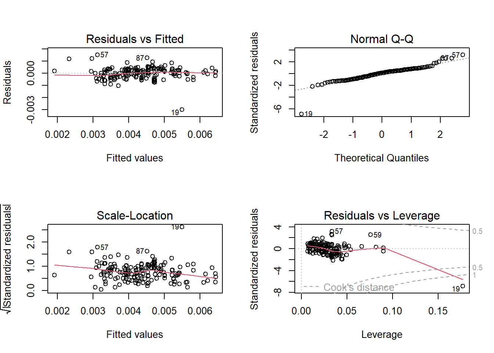

# A tibble: 6 × 9
battery_capacity acceler…¹ top_s…² range effic…³ fast_…⁴ drive numbe…⁵ price…⁶
<dbl> <dbl> <int> <int> <int> <int> <dbl> <int> <dbl>
1 58 7.3 150 335 173 210 2 5 45999.
2 31 22.4 130 160 194 NA 2 5 38016
3 36 7.9 144 220 164 230 2 5 31194
4 86.5 5.7 200 375 231 600 1 5 95880
5 83.7 2.8 260 390 215 860 1 4 166596
6 36 14 123 165 218 170 2 7 36306
# … with abbreviated variable names ¹acceleration, ²top_speed, ³efficiency,
# ⁴fast_charge_speed, ⁵number_of_seats, ⁶price_in_usPredicting EV Price
Introduction
In this project, I will be creating a model to predict the prices of electric vehicles (in USD) based on variables such as battery capacity, acceleration, top speed, range, efficiency, fast charge speed, drive, and number of seats.
Data Description
This dataset has 177 observations with 9 variables. 1. Battery Capacity (numeric) 2. Acceleration (numeric) 3. Top Speed (numeric) 4. Range (numeric) 5. Efficiency (numeric) 6. Fast Charge Speed (numeric) 7. Drive (categorical) 8. Number of Seats (categorical) 9. Price in USD (numeric)
Head of Dataset
Dataset Summary
battery_capacity acceleration top_speed range efficiency fast_charge_speed drive number_of_seats price_in_us
Min. : 16.70 Min. : 2.100 Min. :123 Min. : 95.0 Min. :104.0 Min. : 120.0 Min. :1.000 Min. :2.000 Min. : 21924
1st Qu.: 45.00 1st Qu.: 5.500 1st Qu.:150 1st Qu.:260.0 1st Qu.:168.0 1st Qu.: 290.0 1st Qu.:1.000 1st Qu.:5.000 1st Qu.: 37800
Median : 66.50 Median : 7.500 Median :160 Median :340.0 Median :189.0 Median : 440.0 Median :2.000 Median :5.000 Median : 54174
Mean : 65.67 Mean : 7.802 Mean :177 Mean :339.2 Mean :194.6 Mean : 485.5 Mean :1.893 Mean :5.175 Mean : 61514
3rd Qu.: 77.40 3rd Qu.: 9.500 3rd Qu.:200 3rd Qu.:400.0 3rd Qu.:216.0 3rd Qu.: 600.0 3rd Qu.:3.000 3rd Qu.:5.000 3rd Qu.: 69962
Max. :200.00 Max. :22.400 Max. :410 Max. :970.0 Max. :281.0 Max. :1410.0 Max. :3.000 Max. :7.000 Max. :226800
NA's :5 Correlation Matrix (includes Y)
battery_capacity acceleration top_speed range efficiency fast_charge_speed drive number_of_seats price_in_us
battery_capacity 1.0000000 -0.6161240 0.68646467 0.88847790 0.34886536 NA -0.41253888 0.12557524 0.70021707
acceleration -0.6161240 1.0000000 -0.81828960 -0.70778045 0.15614859 NA 0.46204445 0.33324436 -0.54858909
top_speed 0.6864647 -0.8182896 1.00000000 0.75688015 -0.05902354 NA -0.45233581 -0.25453321 0.76269832
range 0.8884779 -0.7077804 0.75688015 1.00000000 -0.08388001 NA -0.32897233 -0.07879452 0.66648067
efficiency 0.3488654 0.1561486 -0.05902354 -0.08388001 1.00000000 NA -0.25848770 0.59961703 0.26849720
fast_charge_speed NA NA NA NA NA 1 NA NA NA
drive -0.4125389 0.4620444 -0.45233581 -0.32897233 -0.25848770 NA 1.00000000 -0.09465541 -0.51721581
number_of_seats 0.1255752 0.3332444 -0.25453321 -0.07879452 0.59961703 NA -0.09465541 1.00000000 -0.01148547
price_in_us 0.7002171 -0.5485891 0.76269832 0.66648067 0.26849720 NA -0.51721581 -0.01148547 1.00000000Linearity of Y v. Predictors
Distribution of Predictors + Y
Model(s)
Model 1 (Full Model, No Transformations)
price_in_us ~ (battery_capacity + acceleration + top_speed + range + efficiency + fast_charge_speed + drive + number_of_seats
Call:
lm(formula = price_in_us ~ (battery_capacity + acceleration +
top_speed + range + efficiency + fast_charge_speed + drive +
number_of_seats), data = ev_cars)
Residuals:
Min 1Q Median 3Q Max
-39394 -8053 -1104 4860 67594
Coefficients:
Estimate Std. Error t value Pr(>|t|)
(Intercept) -2.199e+05 2.285e+04 -9.622 < 2e-16 ***
battery_capacity -1.897e+03 3.118e+02 -6.085 8.05e-09 ***
acceleration 3.267e+03 9.127e+02 3.579 0.000454 ***
top_speed 4.866e+02 5.890e+01 8.262 4.70e-14 ***
range 4.620e+02 6.444e+01 7.169 2.50e-11 ***
efficiency 1.014e+03 1.244e+02 8.151 9.07e-14 ***
fast_charge_speed 2.417e+00 8.639e+00 0.280 0.779950
drive -7.378e+03 1.877e+03 -3.930 0.000125 ***
number_of_seats -9.022e+03 1.935e+03 -4.662 6.49e-06 ***
---
Signif. codes: 0 '***' 0.001 '**' 0.01 '*' 0.05 '.' 0.1 ' ' 1
Residual standard error: 14920 on 163 degrees of freedom
(5 observations deleted due to missingness)
Multiple R-squared: 0.7955, Adjusted R-squared: 0.7854
F-statistic: 79.24 on 8 and 163 DF, p-value: < 2.2e-16bcPower Transformations to Multinormality
Est Power Rounded Pwr Wald Lwr Bnd Wald Upr Bnd
Y1 -0.6817 -0.5 -0.9277 -0.4357
Y2 0.0033 0.0 -0.0020 0.0087
Y3 0.4054 0.5 0.1916 0.6191
Y4 -1.0828 -1.0 -1.5060 -0.6595
Y5 0.0049 0.0 -0.0012 0.0110
Y6 0.0112 0.0 -0.0028 0.0253
Y7 -0.0521 0.0 -0.2491 0.1449
Y8 -0.5047 -0.5 -0.9337 -0.0758
Y9 -0.9642 -1.0 -1.6992 -0.2292
Likelihood ratio test that transformation parameters are equal to 0
(all log transformations)
LRT df pval
LR test, lambda = (0 0 0 0 0 0 0 0 0) 71.35114 9 8.2684e-12
Likelihood ratio test that no transformations are needed
LRT df pval
LR test, lambda = (1 1 1 1 1 1 1 1 1) 1749.079 9 < 2.22e-16The first model is a simple linear regression model that includes the following variables as predictors for price_in_us with no transformation to both X nor Y: battery_capacity, acceleration, top_speed, range, efficiency, fast_charge_speed, drive, and number_of_seats. The summary of this model tells us that the fast_charge_speed is a statistically insignificant predictor of price, given by its high p-value (0.779950). It is also worth noting that the adjusted R squared is 0.7854, meaning that around 78.5% of the variance in the price_in_us variable can be explained by the predictors. From the diagnostic plots, although there is no non-linear pattern in the residuals plot, there is a slight showing of heteroscedasticity in the Residuals vs Fitted plot. The Normal Q-Q plot suggests that despite the presence of a few points that appear to need further investigation, the residuals are generally normally distributed. Another notable observation is the presence of high leverage points (Ex: Point 59) and outliers (Ex: Point 19) in the Residuals vs Leverage plot. From these key takeaways, it can be concluded that a transformation of variables may be necessary.
Model 2
price_in_us^(-0.5) ~ log(battery_capacity) + acceleration^(0.5) + 1/top_speed + log(efficiency) + log(range) + log(drive) + 1/number_of_seats
Call:
lm(formula = t_price ~ t_bat + t_acc + t_tspeed + t_range + t_eff +
t_drive + t_seats)
Residuals:
Min 1Q Median 3Q Max
-2.437e-03 -2.647e-04 5.385e-05 2.681e-04 1.261e-03
Coefficients:
Estimate Std. Error t value Pr(>|t|)
(Intercept) -0.5121752 0.1682443 -3.044 0.002706 **
t_bat -0.0773229 0.0243689 -3.173 0.001792 **
t_acc -0.0002576 0.0001780 -1.447 0.149639
t_tspeed 0.3302845 0.0820974 4.023 8.65e-05 ***
t_range 0.0763017 0.0243678 3.131 0.002052 **
t_eff 0.0748235 0.0243573 3.072 0.002480 **
t_drive 0.0004179 0.0001081 3.865 0.000158 ***
t_seats -0.0002148 0.0010159 -0.211 0.832830
---
Signif. codes: 0 '***' 0.001 '**' 0.01 '*' 0.05 '.' 0.1 ' ' 1
Residual standard error: 0.000465 on 169 degrees of freedom
Multiple R-squared: 0.7664, Adjusted R-squared: 0.7567
F-statistic: 79.19 on 7 and 169 DF, p-value: < 2.2e-16The second linear regression model includes the following transformed variables as predictors for the inverse square-root of price_in_us: log of battery_capacity, square root of acceleration, inverse of top_speed, log of efficiency, log of range, log of drive, and the inverse of number_of_seats. All their corresponding powers are determined by the estimated powers of the Box-Cox transformation. Though the model’s p-value is below 005 (<2.2e-16), its adjusted R-squared value is 0.7567 and the model summary shows that there aretwo transformed variables that are not statistically significant: acceleration and number of seats. Even with transformations applied to every variable, it is worth noting that the best course of action is to perform variable selection in order to make a more appropriate model.
Model 3 (Final and Best Model with Lowest AIC)
price_in_us^(-0.5) ~ log(battery_capacity) + log(range) + 1/top_speed + log(efficiency)
Backwards AIC
Start: AIC=-2708.57
t_price ~ t_bat + t_acc + t_tspeed + t_range + t_eff + t_drive +
t_seats
Df Sum of Sq RSS AIC
- t_seats 1 9.7000e-09 3.6556e-05 -2710.5
<none> 3.6547e-05 -2708.6
- t_acc 1 4.5300e-07 3.7000e-05 -2708.4
- t_eff 1 2.0407e-06 3.8587e-05 -2701.0
- t_range 1 2.1203e-06 3.8667e-05 -2700.6
- t_bat 1 2.1772e-06 3.8724e-05 -2700.3
- t_drive 1 3.2307e-06 3.9777e-05 -2695.6
- t_tspeed 1 3.5001e-06 4.0047e-05 -2694.4
Step: AIC=-2710.53
t_price ~ t_bat + t_acc + t_tspeed + t_range + t_eff + t_drive
Df Sum of Sq RSS AIC
<none> 3.6556e-05 -2710.5
- t_acc 1 4.4420e-07 3.7001e-05 -2710.4
- t_eff 1 2.0313e-06 3.8588e-05 -2702.9
- t_range 1 2.1108e-06 3.8667e-05 -2702.6
- t_bat 1 2.1676e-06 3.8724e-05 -2702.3
- t_drive 1 3.2406e-06 3.9797e-05 -2697.5
- t_tspeed 1 3.6515e-06 4.0208e-05 -2695.7Forward AIC
Start: AIC=-2465.22
t_price ~ 1
Df Sum of Sq RSS AIC
+ t_bat 1 1.0103e-04 5.5395e-05 -2647.0
+ t_range 1 6.9149e-05 8.7275e-05 -2566.5
+ t_tspeed 1 6.8600e-05 8.7824e-05 -2565.4
+ t_acc 1 5.7796e-05 9.8628e-05 -2544.8
+ t_eff 1 2.9438e-05 1.2699e-04 -2500.1
<none> 1.5642e-04 -2465.2
Step: AIC=-2646.96
t_price ~ t_bat
Df Sum of Sq RSS AIC
+ t_range 1 3.6904e-06 5.1705e-05 -2657.2
+ t_eff 1 3.6395e-06 5.1756e-05 -2657.0
+ t_tspeed 1 3.3575e-06 5.2038e-05 -2656.0
+ t_acc 1 1.8306e-06 5.3565e-05 -2650.9
<none> 5.5395e-05 -2647.0
Step: AIC=-2657.16
t_price ~ t_bat + t_range
Df Sum of Sq RSS AIC
+ t_tspeed 1 1.0050e-05 4.1655e-05 -2693.4
+ t_acc 1 6.5397e-06 4.5165e-05 -2679.1
+ t_eff 1 1.9706e-06 4.9734e-05 -2662.0
<none> 5.1705e-05 -2657.2
Step: AIC=-2693.42
t_price ~ t_bat + t_range + t_tspeed
Df Sum of Sq RSS AIC
+ t_eff 1 1.8578e-06 3.9797e-05 -2699.5
<none> 4.1655e-05 -2693.4
+ t_acc 1 4.2600e-09 4.1651e-05 -2691.4
Step: AIC=-2699.49
t_price ~ t_bat + t_range + t_tspeed + t_eff
Df Sum of Sq RSS AIC
<none> 3.9797e-05 -2699.5
+ t_acc 1 4.5397e-11 3.9797e-05 -2697.5Final Model
Call:
lm(formula = t_price ~ t_bat + t_range + t_tspeed + t_eff)
Residuals:
Min 1Q Median 3Q Max
-2.994e-03 -3.243e-04 5.233e-05 2.691e-04 1.502e-03
Coefficients:
Estimate Std. Error t value Pr(>|t|)
(Intercept) -0.48783 0.17342 -2.813 0.00548 **
t_bat -0.07394 0.02511 -2.945 0.00368 **
t_range 0.07296 0.02511 2.905 0.00415 **
t_tspeed 0.31468 0.04802 6.554 6.29e-10 ***
t_eff 0.07112 0.02510 2.834 0.00515 **
---
Signif. codes: 0 '***' 0.001 '**' 0.01 '*' 0.05 '.' 0.1 ' ' 1
Residual standard error: 0.000481 on 172 degrees of freedom
Multiple R-squared: 0.7456, Adjusted R-squared: 0.7397
F-statistic: 126 on 4 and 172 DF, p-value: < 2.2e-16
After variable selection, Model 3 is seen to be our “best” predictive model, as this model reduces the number of predictor variables to prevent overfitting the data as well as removing many predictor variables that were identified as victims of multicollinearity. Moreover, all of the predictor variables in this model are significant while also not violating the model assumptions. Additionally, our high R2 value indicates a good fit of the model to the data and the F - test for overall model significance gives a p - value close to 0, indicating that the final model is valid. Looking at the diagnostic plots, one can see that the final model has relatively constant variance across its fitted values. Also, the Normal Q-Q plot follows a relatively linear trend, which indicates that the model assumption of Normality is satisfied as well. It is worth noting that observation 19 is an extreme outlier in our diagnostic plots and, thus, does stray heavily from the overall model pattern; however, there is little that can be done besides removing this observation from the data, as it is an extreme outlier of the data, with a standardized residual value close to -8. Even transforming the data could do little to fix the extremeness of this data point.